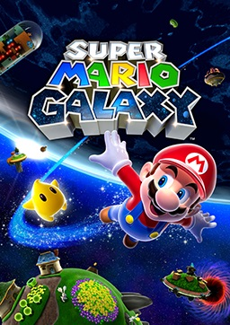
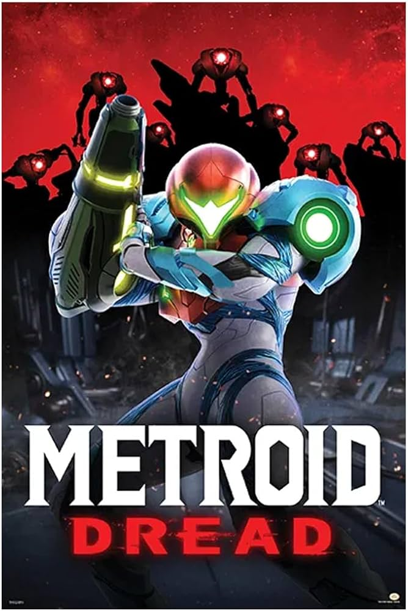
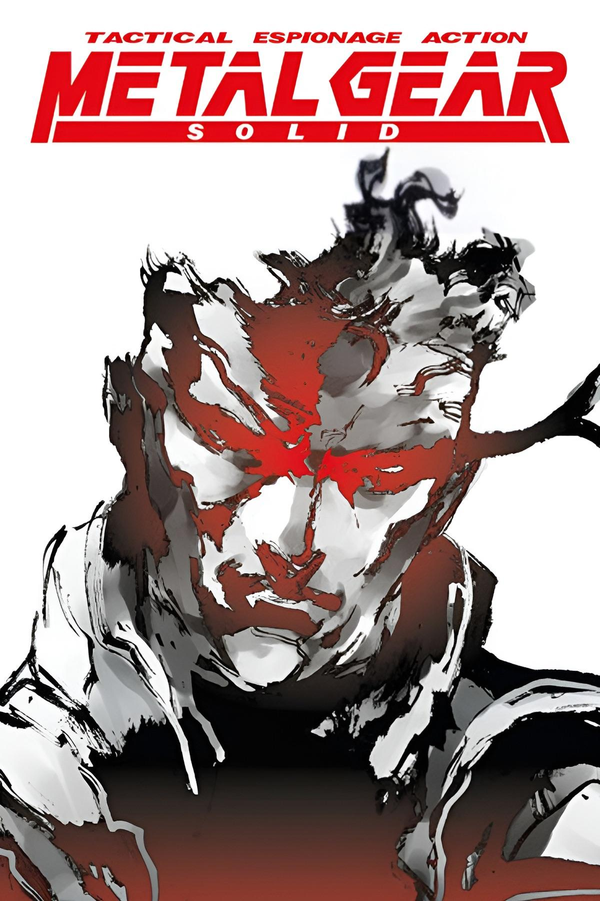

Favorite Video Games

Super Mario Galaxy reimagines classic Mario platforming by introducing gravity-based gameplay across beautifully designed planets. Its creativity, music, and sense of wonder make it one of Nintendo’s most beloved titles.

Bloodborne is a fast-paced action RPG set in a gothic, horror-filled city. Its aggressive combat and mysterious lore encourage exploration, mastery, and risk-taking.

Metroid Dread modernizes the classic 2D Metroid formula with fluid movement, tense stealth moments, and cinematic presentation. The E.M.M.I. encounters add constant pressure and suspense.

Dark Souls is known for its challenging combat and interconnected world. It tells its story subtly through environments and item descriptions, rewarding patience and perseverance.

Metal Gear Solid revolutionized stealth gameplay and cinematic storytelling in video games. Set in a tense military thriller, it blends stealth, tactical decision-making, and philosophical themes into a highly influential experience.